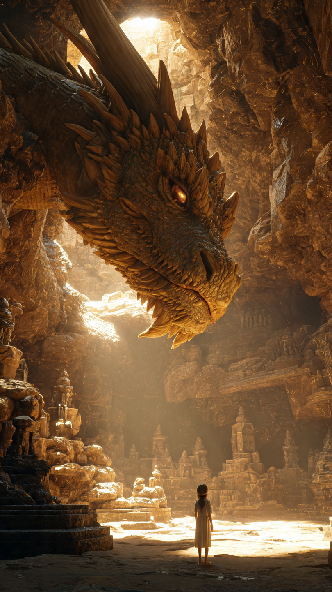
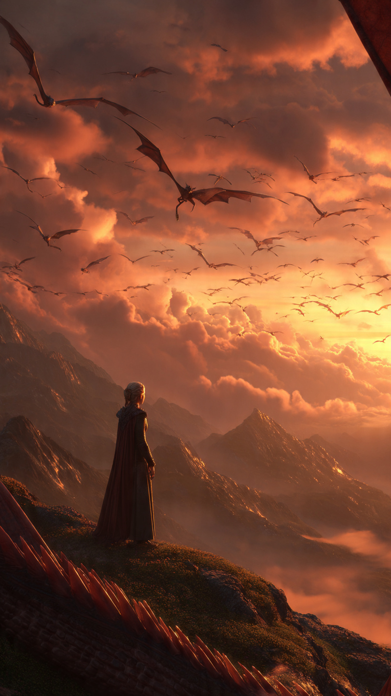

منذ آلاف السنين، كان العالم يعيش مع مخلوقات عظيمة لا يعرف البشر عنها الكثير.
كانت التنانين تحلق فوق الجبال العالية.
تحمي الغابات القديمة.
وتحفظ أسرار السحر الأول.
لكن مع مرور الزمن، اختفت التنانين واحدة تلو الأخرى.
وأصبح الناس يعتقدون أنها مجرد حكايات قديمة تُروى للأطفال.
في قرية صغيرة بين الجبال، كانت تعيش فتاة تُدعى ليان.
لم تكن أميرة.
ولا ساحرة.
ولا تملك أي قوة معروفة.
كانت تعمل مع عائلتها في مزرعة صغيرة، وكانت تحب الذهاب إلى الجبال لرؤية السماء والنجوم.
لكن كان لديها شيء غريب.
منذ طفولتها، كانت تسمع أصواتًا تأتي من أعماق الجبال.
أصواتًا لا يسمعها أحد غيرها.
كان الناس في القرية يخبرونها دائمًا:
"لا تقتربي من الجبل القديم."
"هناك أسرار لا يجب للبشر معرفتها."
لكن ليان كانت تشعر أن الجبل يناديها.
وكأن هناك شيئًا ينتظرها هناك.
في يوم من الأيام، حدث أمر غريب.
غطت السماء سحب سوداء.
بدأت الأرض تهتز.
وخرج صوت عظيم من جهة الجبل.
ظن الجميع أن عاصفة قادمة.
لكن ليان عرفت أن الأمر مختلف.
فالصوت الذي سمعته...
كان ينادي اسمها.
صعدت ليان إلى الجبل وحدها.
وبين الصخور القديمة، وجدت كهفًا ضخمًا لم يره أحد من قبل.
دخلت بحذر.
وفي نهاية الكهف وجدت شيئًا لا يمكن تصديقه.
تنينًا عملاقًا نائمًا.
كانت قشوره ذهبية، وعيناه مغمضتين.
اقتربت ليان ببطء.
وفجأة فتح التنين عينيه.
لم يكن غاضبًا.
بل نظر إليها وكأنه كان ينتظرها منذ زمن طويل.
قال بصوت عميق:
"أخيرًا وصلتِ يا وريثة النار الأولى."
تراجعت ليان بدهشة.
وقالت:
"أنا؟"
"أنا مجرد فتاة من قرية صغيرة."
أجاب التنين:
"أنتِ لا تعرفين حقيقتك بعد."
"لكن دماء حراس التنانين تجري في داخلك."
قبل أن تسأل ليان المزيد، بدأ الكهف يهتز.
دخلت مجموعة من المحاربين إلى الجبل.
كانوا يرتدون دروعًا سوداء ويحملون أسلحة مصنوعة لمواجهة التنانين.
قال قائدهم:
"وجدنا آخر تنين.""واليوم ستنتهي أسطورة التنانين إلى الأبد."
وقف التنين أمام ليان لحمايتها.
لكنها شعرت بطاقة غريبة تستيقظ بداخلها.
وكأن شيئًا قديمًا عاد للحياة.
وفجأة ظهرت علامة ذهبية على يدها.
نظر التنين إليها وقال:
"لقد اختارتك التنانين.""ومن هذه اللحظة..."
"أنتِ ملكة التنانين."
📷 الصورة رقم 1

وقفت ليان أمام التنين العملاق وهي لا تزال تحاول فهم ما يحدث.
قبل ساعات قليلة كانت فتاة عادية تعيش في قرية صغيرة...
والآن يخبرها تنين قديم أنها آخر وريثة لحراس التنانين.
لم تكن تعرف ماذا تفعل.
لكنها شعرت بشيء غريب.
لم يكن خوفًا.
بل إحساسًا بأنها تنتمي إلى هذا المكان منذ زمن بعيد.
اقترب المحاربون من مدخل الكهف.
وكان قائدهم يُدعى فاروس.
كان أشهر صائد للتنانين في العالم.
قال:
"لقد بحثنا عنك سنوات طويلة أيها التنين الأخير."
"واليوم ستنتهي قصتك."
تقدم التنين الذهبي أمام ليان.
وقال:
"لن تسمح لكِ التنانين القديمة بالانتصار."
لكن فاروس ابتسم.
وقال:
"التنانين لم تعد قوية كما كانت."
"والفتاة التي اخترتموها لا تعرف حتى كيف تستخدم قوتها."
نظر الجميع إلى ليان.
كانت تعلم أنه محق.
فهي لم تكن تعرف شيئًا عن السحر.
ولا عن التنانين.
ولا عن القوة التي ظهرت بداخلها.
لكن عندما نظرت إلى التنين...
شعرت أن هناك رابطًا بينهما.
كأنهما يستطيعان فهم بعضهما دون كلمات.
أغمضت ليان عينيها.
وفجأة سمعت أصواتًا كثيرة.
لم تكن أصوات أشخاص.
بل أصوات تنانين قديمة.
كانت أرواح حراس التنانين السابقين تتحدث معها.
قال أحدهم:
"القوة ليست في النار التي تطلقينها."
"القوة في الرابط الذي تبنينه."
فتحت ليان عينيها.
ومدت يدها نحو التنين.
بدأ الضوء الذهبي ينتشر حولهما.
ولأول مرة منذ مئات السنين...
فتح التنين جناحيه بالكامل.
اهتز الجبل من قوة حضوره.
بدأت المعركة.
أطلق المحاربون أسلحتهم نحو التنين.
لكن ليان اكتشفت أنها تستطيع التحكم في طاقة التنانين.
أنشأت حاجزًا من الضوء حماهم.
نظر فاروس إليها بغضب.
وقال:
"أنت لا تفهمين."
"التنانين دمرت العالم قديمًا."
"أنا أحمي البشر منها."
نظرت ليان إليه وقالت:
"ربما كان هناك تنانين شريرة."
"لكن هذا لا يعني أن كل التنانين كذلك."
"مثلما لا يعني أن شخصًا واحدًا سيئًا يجعل الجميع أشرارًا."
توقف فاروس للحظة.
لكن قبل أن يرد...
اهتزت الأرض بعنف.
وانفتح شق ضخم تحت الجبل.
خرج منه مخلوق مظلم لم يعرفه أحد.
كان أكبر من أي تنين عرفه العالم.
نظر التنين الذهبي إليه بخوف.
وقال:
"هذا مستحيل..."
"لقد عاد التنين الأول المظلم."
ثم نظر إلى ليان وأضاف:
"الآن ستعرفين لماذا تم اختيارك."
📷 الصورة رقم 2

خرج التنين المظلم من أعماق الجبل.
كان مختلفًا عن كل التنانين التي عرفها العالم.
لم تكن عيناه تحملان غضبًا فقط...
بل كانت تحملان حزن آلاف السنين.
تراجع الجميع خوفًا.
حتى التنين الذهبي الذي كان لا يخشى شيئًا، وقف صامتًا أمامه.
سألت ليان:
"من هذا؟"
أجاب التنين الذهبي:
"إنه التنين الأول."
"أول مخلوق امتلك قوة النار والسحر."
"لكنه فقد السيطرة على قوته منذ زمن بعيد."
اقترب التنين المظلم وقال بصوت يهز الجبال:
"لقد نسي البشر فضل التنانين."
"حبسونا."
"طاردونا."
"والآن سيعرفون معنى الخوف."
أراد فاروس استغلال الفرصة.
صرخ:
"هذه هي اللحظة التي انتظرناها!"
"يجب القضاء على كل التنانين قبل أن تدمر العالم."
لكن ليان وقفت أمام الجميع.
وقالت:
"لا."
نظر إليها الجميع بدهشة.
قالت:
"إذا قاتلنا الخوف بالخوف..."
"سنصبح مثل من نحاول إيقافه."
"التنانين والبشر يمكنهم أن يعيشوا معًا."
اقترب التنين المظلم منها.
وقال:
"أنت صغيرة جدًا لتفهمي ما حدث."
أجابته ليان:
"ربما لا أعرف كل الماضي."
"لكنني أعرف شيئًا واحدًا."
"أن الألم لا يجعلنا نختار الطريق الصحيح دائمًا."
فجأة بدأت العلامة الذهبية على يدها تضيء بقوة.
لم تكن قوة نار.
ولا قوة ظلال.
كانت قوة الرابط بين كل الكائنات.
ظهرت صور من الماضي أمام الجميع.
رأوا أول حراس التنانين.
ورأوا أن البشر والتنانين كانوا أصدقاء في البداية.
لكن الطمع والخوف هما من جعلاهم أعداء.
شاهد التنين المظلم الحقيقة التي نسيها.
لم يكن العالم يكرهه دائمًا.
كان هو نفسه قد أغلق قلبه بسبب الألم.
بدأت قوته المظلمة تهدأ.
قال التنين:
"كنت أظن أن الانتقام سيعيد ما فقدته."
"لكنه لم يفعل سوى جعلي أفقد المزيد."
اقتربت ليان منه.
وقالت:
"يمكن أن تبدأ من جديد."
انتشر الضوء في السماء.
وعادت التنانين القديمة للظهور من مخابئها.
لم تعد مخلوقات تخشاها البشرية...
بل أصبحت حماة العالم مرة أخرى.
أما فاروس...
فأدرك أنه أمضى حياته يحارب شيئًا لم يفهمه.
وضع سلاحه جانبًا.
وقال:
"ربما كان أكبر عدو لنا..."
"هو جهلنا."
بعد ذلك اليوم، أصبحت ليان أول ملكة للتنانين منذ آلاف السنين.
لم تحكم بالخوف.
بل بالثقة.
وأصبح الجبل القديم مكانًا يأتي إليه البشر والتنانين ليتعلموا من بعضهم.
وكانت ليان دائمًا تقول:
"القوة الحقيقية ليست أن تجعل الآخرين يخافون منك."
"بل أن تجعلهم يثقون بك."
وهكذا بدأت حقبة جديدة...
حقبة عاش فيها البشر والتنانين تحت سماء واحدة.